← Índice de los 69 tutes de IDA
Tute 1 · Qué es IDA y el curso
▶ video afín (mismo autor, en x64dbg): «01 x64dbg primeros pasos» · se conecta con: Herramientas · IDA · Instrucciones · Flujo · Debugger · Números
INTRODUCCIÓN AL REVERSING CON IDA PRO DESDE CERO.
La idea de esta serie de tutoriales es realizar una actualización de nuestro original curso de cracking y reversing con OLLYDBG esta vez utilizando IDA PRO aprendiendo a usarlo desde cero y también trabajar en Windows más actualizados en este caso estoy utilizando Windows 10 Anniversary Update con todos los parches al 29 de octubre de 2016 de 64 bits.
NOTA POSTERIOR: Este curso fue realizado cuando la ultima versión de IDA era la 6.8, por lo tanto, conviene hacerlo con esa misma versión que se consigue fácilmente en internet.
La base del funcionamiento es la misma que las posteriores versiones 7.x el que aprende a usar IDA 6.8 sabrá usar IDA 7.x.
La diferencia mayor entre IDA 6.8 y 7.x es que este ultimo esta compilado en 64 bits, mientras que el IDA 6.8 estaba compilado en 32 bits.
Esto a pesar que en el uso no trae grandes diferencias, si hace que la mayoría de los plugin para la versión 6.8 no funcionen en la versión 7.x, algunos fueron reescritos y adaptados otros no y quedaron solo para la versión 6.8, por lo tanto esta bueno hacer este tutorial y si algún plugin que usamos no se consigue para la versión 7, hay alguno nuevo que seguro lo reemplazara y será similar, pero la base del manejo de IDA es similar en ambas versiones y se mantiene la importancia de esta serie de tutoriales como base para aprender a usarlo.
PORQUE IDA PRO?
Porque mientras que OLLYDBG nos limitaba ya que es solo un debugger para 32 bits en user mode de Windows, IDA PRO es una herramienta completa de reversing que se puede usar en 32 y 64 bits como desensamblador y como debugger, permite reversing estático lo cual no se puede realizar con OLLYDBG y además el que lo aprende a usar a pesar de tener una curva más compleja de aprendizaje nos permitirá también trabajar nativamente en Windows, Linux or Mac OS X y remotamente en los siguientes sistemas operativos.
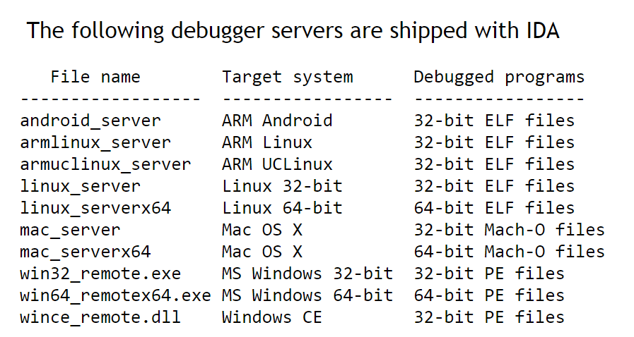
Para darse una idea de los procesadores soportados aquí la lista:
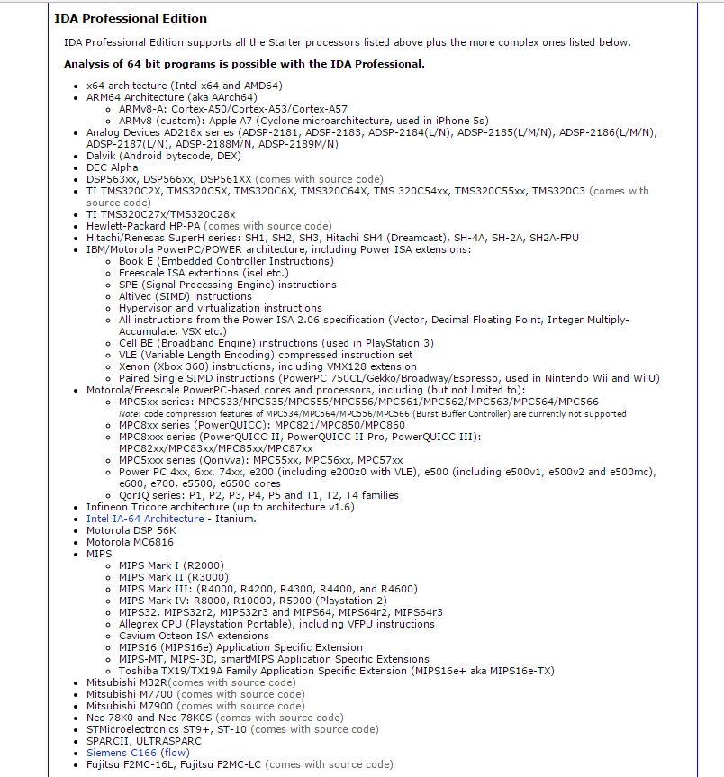
Como vemos aprender a usar IDA nos permitirá ampliar nuestro universo de trabajo aunque en esta serie de tutes nos centraremos en Windows 32 y 64 bits en user y a veces kernel mode el hecho de familiarizarnos con la herramienta nos permitirá adaptarnos fácilmente a cualquier uso.
La idea de estos tutoriales es empezar desde cero o sea que muchas cosas que vimos en la introducción a Ollydbg se verá de nuevo aquí pero en IDA tratando de llegar más lejos desde el mismo inicio.
Si alguien ve que se le complica lo que lee, quizás sea conveniente leer primero la serie de tutoriales de CRACKING DESDE CERO CON OLLYDBG que son un poco más sencillos.
Por lo tanto aquí habrá de todo reversing estático y dinámico, cracking, exploit, unpacking trataremos de abarcar lo más posible empezando desde cero.
LO PRIMERO ES LO PRIMERO
Lo primero es obtener el IDA PRO el problema es que es un programa pago y no podríamos obtenerlo sin pagar unos buenos pesos que lo vale.
No podemos distribuirlo pero buscando en google IDA PRO 6.8 + HEXRAYS que es la versión que trabajaremos y es la última que está disponible, podrán bajarlo sin problemas.
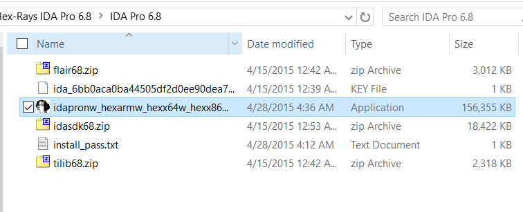
Allí vemos los archivos que contiene el zip que bajamos, está el instalador que se llama idapronw_hexarmw_hexx64w_hexx86w_150413_cb5d8b3937caf856aaae750455d2b4ae y pide al instalar un password que está en el archivo install_pass.txt.
También al instalar IDA nos instalará Python 2.7.6. Conviene para no tener problemas usar la versión de Python incluida en IDA y previo a la instalación de IDA desinstalar otros Python que haya en la máquina instalados previamente para no conflictuar.
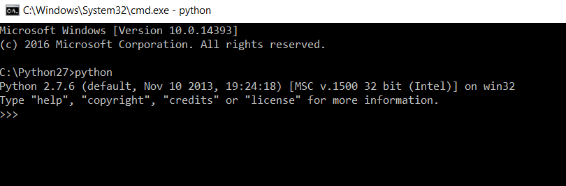
Una vez instalado podemos usarlo por primera vez. y como siempre abriremos como en todo curso que se precie, el crackme de Cruehead que estará adjuntado junto con el tutorial.
Como es un ejecutable de 32 bits, lo abrimos con la versión de IDA para 32 bits que se arranca con ese acceso directo.
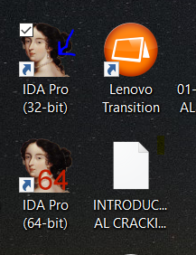
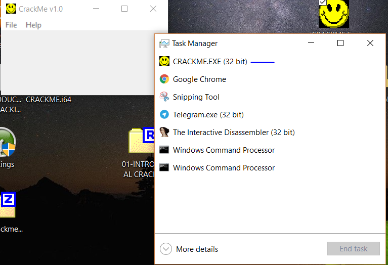
Si lo corriéramos fuera de IDA vemos en el task manager de Windows que es un proceso de 32 bits, si queremos ver si es de 32 o 64 bits sin correrlo, con un editor hexadecimal como por ejemplo.
https://mh-nexus.de/en/downloads.php?product=HxD
De ahí se bajan el hxd y lo instalan
http://mh-nexus.de/downloads/HxDSetupES.zip
Esa es la versión en español.
Una forma rápida al abrir un archivo en un editor hexa para saber si es de 32 bits o de 64 a simple vista es esta.
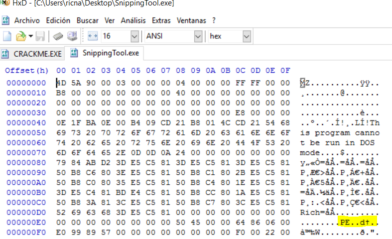
Este es uno de 64 bits nativo es el Snipping tool incluido en las nuevas versiones de Windows (Recortes en la versión en español) y vemos que después de la palabra PE tiene
PE..d†
Mientras que el crackme de Cruehead que es de 32 bits después de PE tiene.
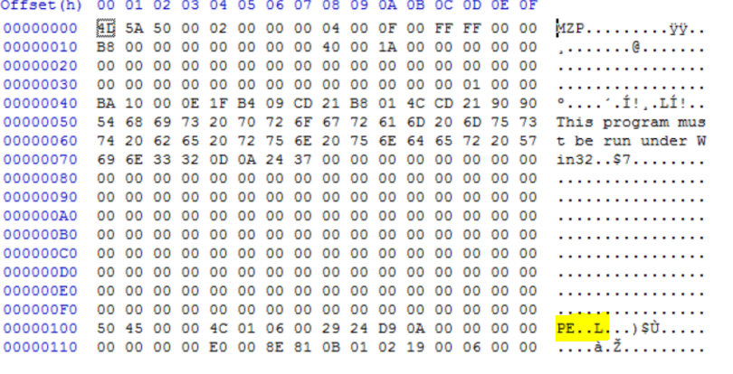
PE..L
Así que ya sabemos que lo debemos abrir con la versión de 32 bits de IDA, usando el acceso directo antes mencionado, cuando nos aparece la ventana de IDA QUICK START elegimos NEW para abrir un archivo nuevo, buscamos el crackme lo abrimos.
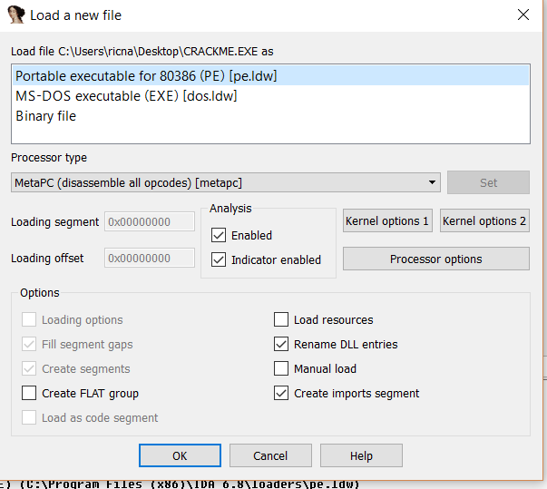
Por ahora dejamos todo así como esta ya que detecta que es un ejecutable PE correctamente y damos OK.
Si aceptamos con YES el modo PROXIMITY VIEW veremos un pantallazo de un árbol de las funciones del programa
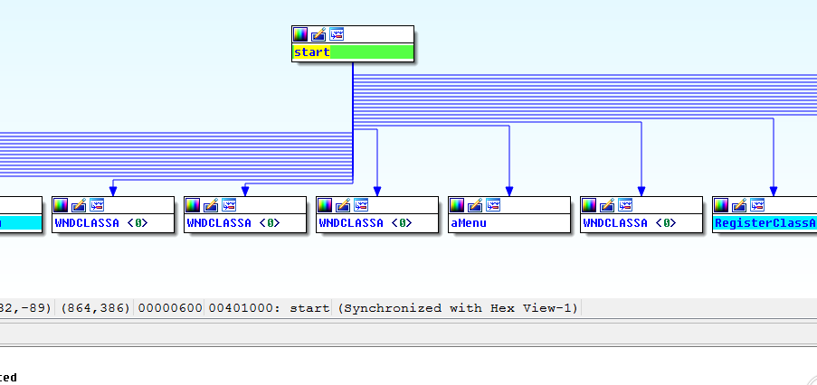
Para cambiar a modo gráfico o a un listado de instrucciones no gráfico podremos hacerlo alternando con la barra espaciadora.
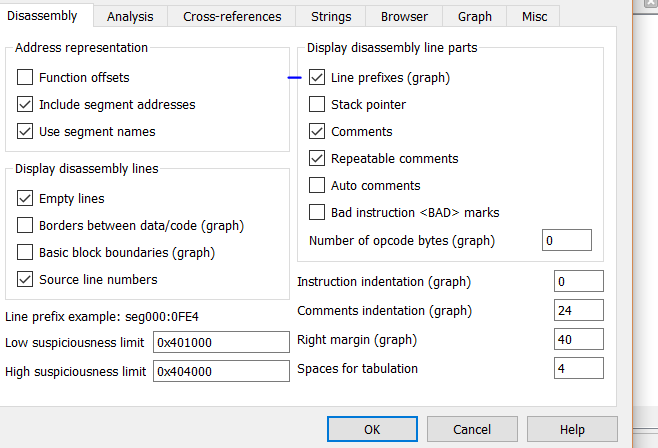
También en OPTIONS - GENERAL -LINE PREFIXES podemos agregar las direcciones delante en la vista de gráficos y en NUMBER OF OPCODE BYTES si cambiamos el 0 que trae por default, veremos los opcodes o bytes que componen de cada instrucción.
Al abrir un ejecutable lo primero que se abre en el mismo es la vista de desensamblador (lo que llaman LOADER) y que no ejecuta el programa sólo lo analiza con propósitos de reversing creando un archivo idb o database.
Para debuggear debemos elegir entre las varias posibilidades de debuggers que incluye IDA y arrancarlo en modo DEBUGGER lo cual veremos más adelante.
Vemos que muchas opciones del programa se ven como pestañas y al ir al menú VIEW-OPEN SUBVIEW podremos abrir pestañas según nuestro gusto y necesidad para no tener abiertas de más.
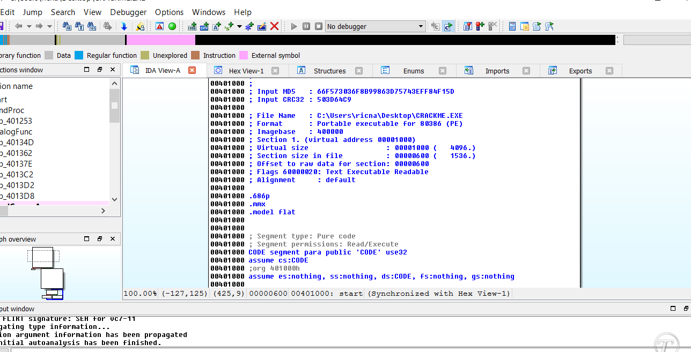
Una de las posibles confusiones o molestias al usar IDA hasta que uno se acostumbra es que hay partes del grafo donde hay varias menciones a una misma dirección como por ejemplo en el inicio de una función la dirección se repite varias veces, eso ocurre porque hay mucha información de esa dirección y no queda bien en una sola línea o no entra.
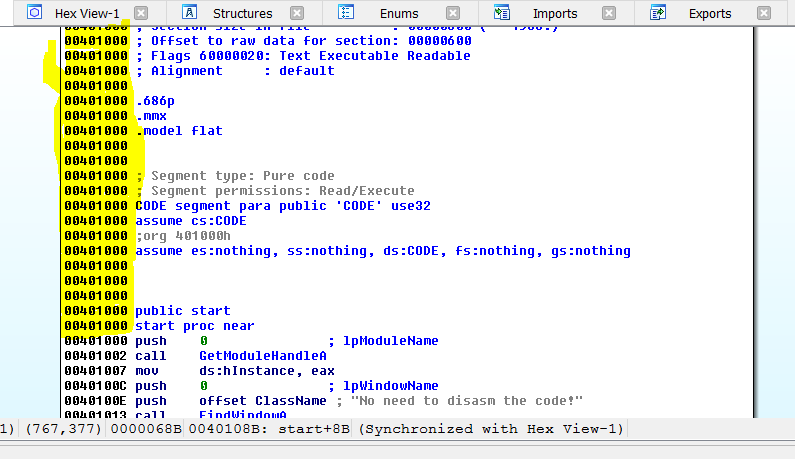
Igual cuando ya llegamos a la última vez que se repite la misma dirección, ahí encontramos el inicio del listado desensamblado en este caso la instrucción correspondiente a 401000 es el PUSH 0.
IDA tiene la posibilidad de tunear la interface por default separadamente para el LOADER y para el DEBUGGER.
Una vez que acomodamos por ejemplo en el LOADER las ventanas y pestañas que más usamos a nuestro gusto yendo a WINDOWS-SAVE DESKTOP y poniendo la tilde en default guardará la configuración por DEFAULT, lo mismo podremos hacer cuando arranquemos en modo debugger y cambiar a una configuración por default distinta a la del LOADER.
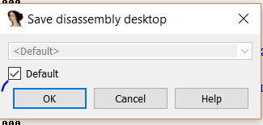
En cualquiera de las pestañas del IDA donde haya listas como por ejemplo FUNCTIONS, STRINGS, NAMES etc
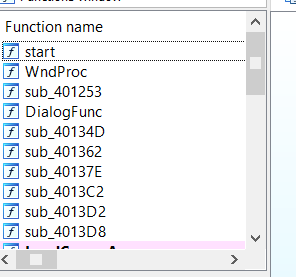
Podremos buscar con CTRL mas F se nos abrirá un buscador que filtra según lo que vayamos tipeando.
En VIEW-OPEN SUBVIEW-STRINGS como en este caso, que me muestre las strings que contienen “try”.
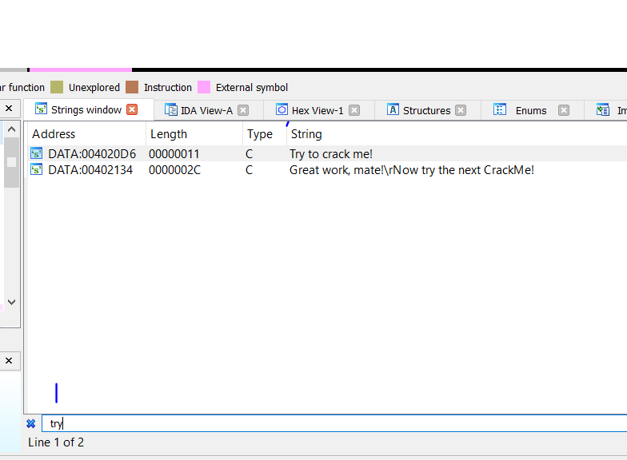
También si voy a VIEW-OPEN SUBVIEW-DISASSEMBLY puedo abrir una segunda ventana de desensamblado que puede mostrar una función diferente a la primera y así poder tener muchas funciones a la vista a la vez.
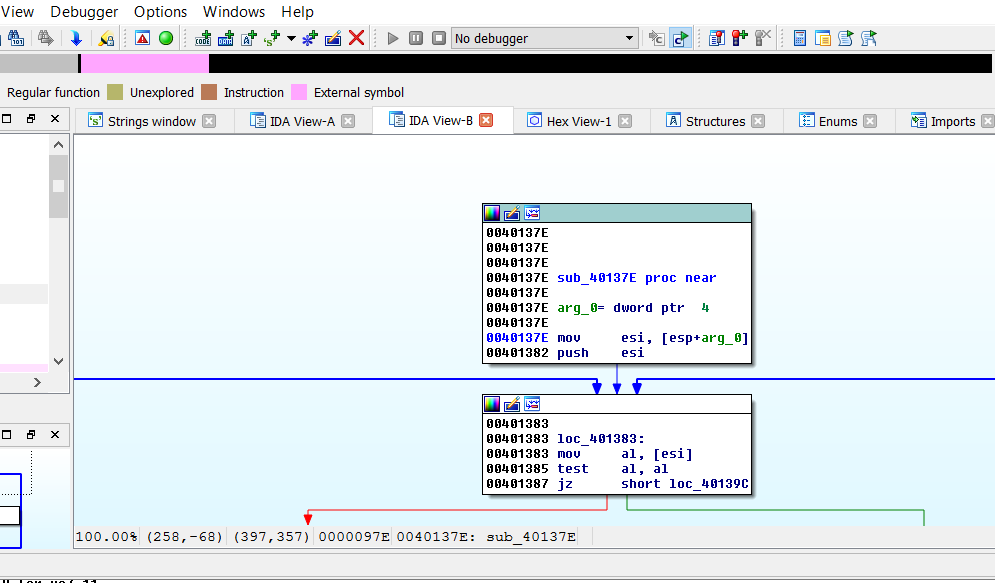
Tengo también en OPEN SUBVIEW en el LOADER una pestaña de vista hexadecimal o HEX DUMP.
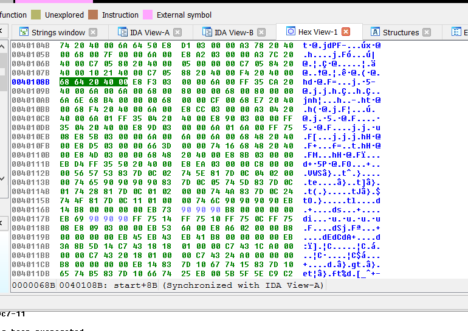
También en OPEN SUBVIEW puedo mostrar la pestaña de las funciones importadas o IMPORTS.
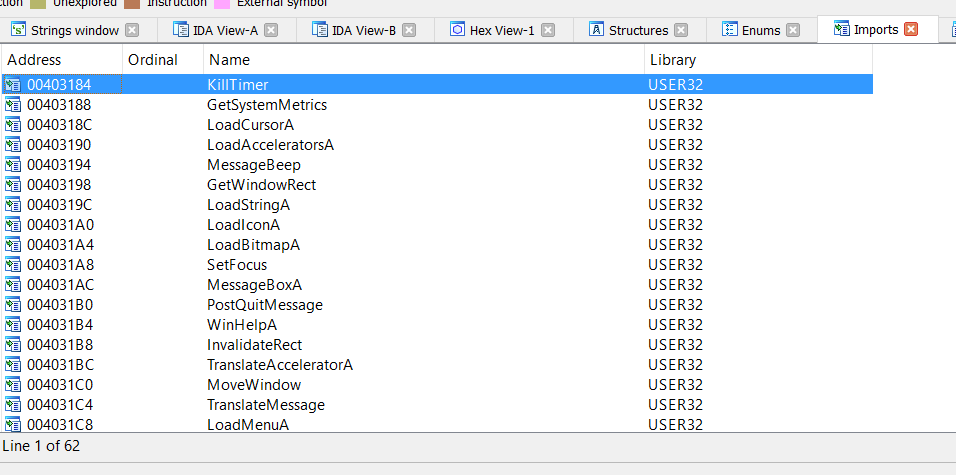
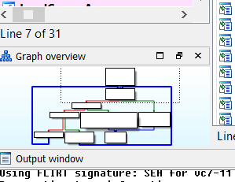
También en VIEW se activa GRAPH OVERVIEW qué es un navegador por el gráfico de la función visible, pudiendo mover y cambiar la parte que se muestra actualmente de la función en pantalla.
También tenemos pestañas dedicadas para ESTRUCTURAS, EXPORTS, NAMES, SEGMENTS etc las cuales iremos explicando a medida que las vayamos usando.
La barra de navegación superior muestra con diferentes colores las distintas partes de un ejecutable.
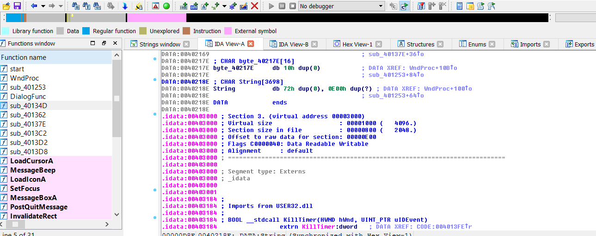
Justo debajo nos aclara qué significa cada color por ejemplo el gris es la sección data y si clickeo en la barra en esa parte gris, el gráfico se mueve a dicha sección cuyas direcciones están en gris. En la imagen vemos que la parte rosada corresponde a externa symbol o la sección idata y la parte azul son las que detectó como funciones en la sección de código.
Hemos dado un primer pantallazo a vuelo de pájaro en esta parte 1 por supuesto en las siguientes iremos poco a poco profundizando.
Hasta la parte 2
Ricardo Narvaja